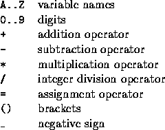

| Calculator Language |
Calculator Language (CL) supports assignment, positive and negative integers and simple arithmetic. The allowable characters in a CL statement are thus:

All operators have the same precedence and are right associative, thus 15 - 8 - 3 = 15 - (8 - 3) = 10. As one would expect, brackets will force the expression within them to be evaluated first. Brackets may be nested arbitrarily deeply. An expression never has two operators next to each other (even if separated by a bracket), an assignment operator is always immediately preceded by a variable and the leftmost operator on a line is always an assignment. For readability, spaces may be freely inserted into an expression, except between a negative sign and a number. A negative sign will not appear before a variable. All variables are initialised to zero (0) and retain their values until changed explicitly.
Write a program that will accept and evaluate expressions written in this language. Each expression occupies one line and contains at least one assignment operator, and maybe more.
Input will consist of a series of lines, each line containing a correct CL expression. No line will be longer than 100 characters. The file will be terminated by a line consisting of a single #.
Output will consist of a series of lines, one for each line of the input. Each line will consist of a list of the final values of all variables whose value changes as a result of the evaluation of that expression. If more than one variable changes value, they should be listed in alphabetical order, separated by commas. If a variable changes value more than once in an expression, only the final value is output. A variable is said to change value if its value after the expression has been evaluated is different from its value before the expression was evaluated. If no variables change value, then print the message `No Change'. Follow the format shown below exactly.
A = B = 4 C = (D = 2)*_2 C = D = 2 * _2 F = C - D E = D * _10 Z = 10 / 3 #
A = 4, B = 4 C = -4, D = 2 D = -4 No Change E = 40 Z = 3